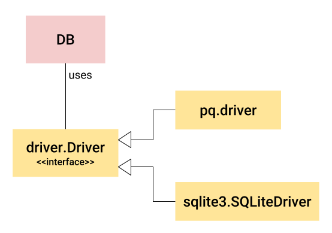

Using SQL databases from Go is easy, in three steps:
// Step 1: import the main SQL package
import "database/sql"
// Step 2: import a driver package to use a specific SQL database
import _ "github.com/mattn/go-sqlite3"
// Step 3: open a database using a registered driver name
func main() {
// ...
db, err := sql.Open("sqlite3", "database.db")
// ...
}
From this point on, the db object can be used to query and modify the database, with the same code suitable for all the supported SQL databases. If we want to change our database from SQLite to PostgreSQL, it's very likely that we only need to import a different driver and provide a different name in the call to sql.Open [1].
In this post I want to briefly examine some of the design patterns and architecture behind database/sql that makes this all possible.
The main design pattern
The architecture of database/sql is governed by one overarching design pattern. I was trying to figure out which of the classical design patterns it resembles most, and the Strategy Pattern seems the closest, though it's not quite that. Let me know if you can think of a closer correspondence [2].
It goes like this: we have a common interface we want to present to users, with an implementation that's specific to every DB backend. Obviously, this sounds like a classic interface + implementation, which Go is particularly good at with its robust support for interfaces.
So the first idea would be: create some DB interface which the user interacts with, and each backend implements this interface. Sounds simple, right?
Sure, but there are some issues with this approach. Remember that Go recommends interfaces to be small, with just a handful of methods to implement. Here we'd need a much larger DB interface, and this leads to problems:
- Adding user-facing capabilities is difficult because they may require adding methods to the interface. This breaks all the interface implementations and requires multiple standalone projects to update their code.
- Encapsulating functionality that is common to all database backends is difficult, because there is no natural place to add it if the user interacts directly with the DB interface. It has to be implemented separately for each backend, which is wasteful and logistically complicated.
- If backends want to add optional capabilities, this is challenging with a single interface without resorting to type-casts for specific backends.
Therefore, a better idea seems to be: split up the user-facing type and functionality from the common backend interface. Graphically, it looks like this:
DB is a user-facing type. It's not an interface, but a concrete type (a struct) implemented in database/sql itself. It is backend-independent and encapsulates a lot of functionality that is common to all backends, like connection pooling.
To do backend-specific work (such as issue SQL queries to the actual database), DB uses an interface called database/sql/driver.Driver (and several other interfaces that define connections, transactions, etc). This interface is lower-level, and it's implemented by each database backend. In the diagram above we can see implementations from the pq package (for PostreSQL) and from the sqlite3 package.
This approach helps database/sql elegantly address the problems mentioned earlier:
- Adding user-facing capabilities doesn't necessarily require an interface change now, as long as the capability can be implemented in the backend-independent layer (DB and its sister types).
- Functionality that's common to all database backends now has a natural place to be in. I've mentioned connection pooling, but there is a lot of other stuff the backend-independent types in database/sql add on top of the backend-specific implementations. Another example: handling retries for bad connection to the database server.
- If backends add optional capabilities, these can be selectively utilized in the backend-independent layer without exposing them directly to the user.
Registering drivers
Another interesting aspect of the design of database/sql is how database drivers register themselves with the main package. It's a nice example of implementing compile-time plugins in Go.
As the code sample at the top of this post shows, database/sql knows about the imported drivers' names, and can open them by name with sql.Open. How does that work?
The trick is in the blank import:
import _ "github.com/mattn/go-sqlite3"
While it doesn't actually import any names from the package, it does invoke its init function, which in case of sqlite3 is:
func init() {
sql.Register("sqlite3", &SQLiteDriver{})
}
In sql.go, Register adds a mapping from a string name to an implementation of the driver.Driver interface; the mapping is in a global map:
var (
driversMu sync.RWMutex
drivers = make(map[string]driver.Driver)
)
// Register makes a database driver available by the provided name.
// If Register is called twice with the same name or if driver is nil,
// it panics.
func Register(name string, driver driver.Driver) {
driversMu.Lock()
defer driversMu.Unlock()
if driver == nil {
panic("sql: Register driver is nil")
}
if _, dup := drivers[name]; dup {
panic("sql: Register called twice for driver " + name)
}
drivers[name] = driver
}
When sql.Open is called, it looks up the name in the drivers map and can then instantiate a DB object with the proper driver implementation attached. You can also call the sql.Drivers function at any time to get the names of all the registered drivers.
This approach implements a compile-time plugin, because the imports for the included backends happen when the Go code is compiled. The binary has a fixed set of database drivers built into it. Go also has support for run-time plugins, but that is a topic for a separate post.
Custom types with the Scanner interface
Another interesting architectural feature of the database/sql package is supporting storage and retrieval of custom types in the database. The Rows.Scan method is typically used to read columns from a row. It takes a sequence of interface{} to be generic, using a type switch underneath to select the right reader depending on the type of an argument.
For customization, Rows.Scan supports types that implement the sql.Scanner interface, and then invokes their Scan method to perform the actual data read.
One built-in example is sql.NullString. If we try to Scan a column into a string variable:
var id int
var username string
err = rows.Scan(&id, &username)
and that column has a NULL value, we'll get an error:
sql: Scan error on column index 1, name "username":
unsupported Scan, storing driver.Value type <nil> into type *string
We can avoid this by using a sql.NullString instead:
var id int
var username sql.NullString
err = rows.Scan(&id, &username)
Here username will have its Valid field set to false for a NULL column. This works because NullString implements the Scanner interface.
A more interesting example involves types that are specific to certain database backends. For example, while PostgrSQL supports array types, some other databases (like SQLite) do not. So database/sql cannot support array types natively, but features like the Scanner interface make it possible for user code to interact with such data fairly easily anyway.
To extend the previous example, suppose our rows also have a list of activities (as strings) for each user [3]. Then the Scan would go like this:
var id int
var username sql.NullString
var activities []string
err = rows.Scan(&id, &username, pq.Array(&activities))
The pq.Array function is provided by the pq PostgreSQL binding. It takes a slice and converts it to an anonymous type that implements the sql.Scanner interface.
This is a nice way to escape the abstraction when necessary. Even though it's great to have a uniform interface to access many kinds of databases, sometimes we really do want to use a specific DB with its specific features. It would be a shame to give up database/sql in this case, and we don't have to - because of these features that let specific database backends provide custom behavior.
| [1] | Assuming we only use standard SQL syntax in our queries that both databases support, of course. |
| [2] | I first encountered an explicit discussion of this pattern in the Go CDK project, which I recently joined. The Go CDK uses a similar approach for its portable types, and its design documentation calls it the portable type and driver pattern. |
| [3] | I realize that multi-valued fields are not good relational design. This is just an example. |